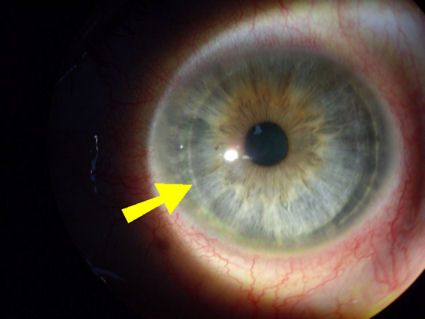
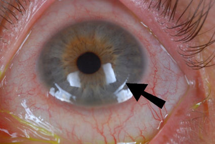
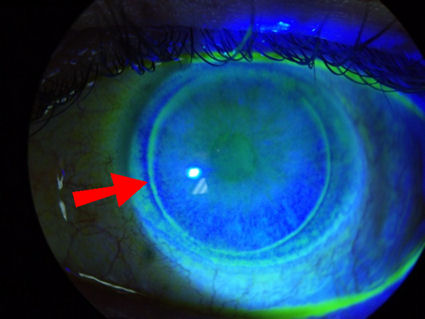
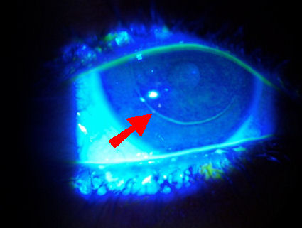
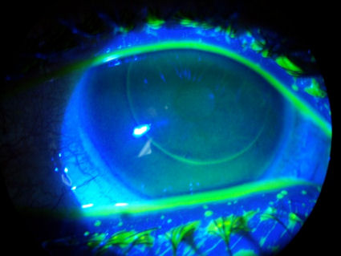
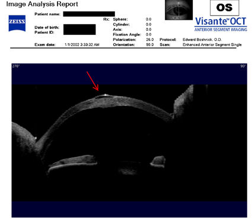
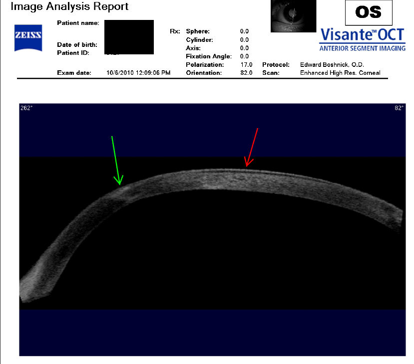

Watch as Dr. Oz explains that the LASIK flap does not heal and may be accidentally dislodged years later.
Dr. John Kanellopoulos: “There was evidence presented by Emory University’s Henry Edelhauser at this year’s Refractive Surgery Subspecialty Day at the Academy of Ophthalmology meeting that the LASIK flap never actually heals onto the underlying stroma, especially centrally... This was a real eye-opener for me..." (Review of Ophthalmology 2/1/2009)
"Although LASIK remains the most popular refractive surgical procedure, it is becoming apparent that corneal surfaces, cut to create the midstromal flap during surgery, fail to fully reunite postoperatively; surgeons can simply peel back an anterior corneal flap several years later. Such patients are at risk for progressive visual disability due to general corneal weakness that may progress to ectasia or even traumatic displacement of the insecure flap." (Mi et al, 2011)
"To put it more simply, the corneal flap after LASIK provides no more corneal strength than the wearing of a contact lens." William Jory, MD. J Refract Surg. 2004 May-Jun;20(3):286.
"There is a high risk of potential traumatic flap problems after LASIK and it is not recommended in army service". Xiao JH, Zhang MN, Jiang CH, Zhang Y, Qiu HY. Laser in situ keratomileusis surgery is not safe for military personnel. Chin J Traumatol. 2012 Apr 1;15(2):77-80.
"These flaps can be lifted forever, and I guess they can dislocate forever, so we have to inform our patients of that." Samir A. Melki, MD, PhD, Harvard Medical School. (EyeWorld, September 2001)
Patients who experience flap dislocation or other complications after LASIK should file a MedWatch report with the FDA online. Alternatively, you may call FDA at 1-800-FDA-1088 to report by telephone, download the paper form and either fax it to 1-800-FDA-0178 or mail it to the address shown at the bottom of page 3, or download the MedWatcher Mobile App for reporting LASIK problems to the FDA using a smart phone or tablet. Read a sample of LASIK injury reports currently on file with the FDA.
Patients with LASIK complications are invited to join the discussion on FaceBook
Flap dislocation after LASIK images courtesy of Dr. Edward Boshnick.
Ten-year-old LASIK flap dislocated by a paper airplane
From the article:
"A 49-year-old teacher was referred after his right eye was hit from the side by a paper air plane in class 1 day prior... He had immediately experienced pain and complained about an ongoing loss of vision in this eye... [This case] illustrates that even 10 years after LASIK the flap may be dislocated due to very mild trauma."
Source: Taneri at al. Traumatic flap dislocation by paper air plane 10 years after LASIK. Am J Ophthalmol Case Rep. 2019 Jul 9;15:100514. Link to article
Pro Football Player's Lasik Flap Dislodged During Championship Game - CBS Sports 1/26/2016
Roman Harper, safety for the Carolina Panthers, learned the hard way that Lasik flaps don't heal. In the NFC Championship game his Lasik flap was dislodged.
550 cases of late traumatic flap complications in Chinese literature, 45 Chinese military hospital patients
Late traumatic flap complications after LASIK on the rise in China. 92 patients presenting to Chinese military hospitals from 2006 to 2011 with eye injuries had a history of LASIK -- 45 of these injuries were late traumatic flap complications. In a Chinese literature review, 550 cases of late traumatic flap complications were found.
The cornea is incapable of complete healing after LASIK. The cornea forms a miniscule scar at the edge of the LASIK flap, which holds the flap in place, but the flap itself does not bond to the underlying cornea.
Medical research has repeatedly demonstrated that the LASIK flap never heals. Peer-reviewed medical literature contains numerous reports of flap dislocations many years after LASIK. Patients should be informed of this risk prior to having LASIK. The FDA website warns that patients who participate in contact sports are not good candidates for LASIK. FDA link.
Read a large collection of medical studies which demonstrate that the LASIK flap never heals.
Problems from LASIK? File a MedWatch report with the FDA online. Alternatively, you may call FDA at 1-800-FDA-1088 to report by telephone, download the paper form and either fax it to 1-800-FDA-0178 or mail it using the postage-paid addressed form, or download the MedWatcher Mobile App for reporting LASIK problems to the FDA using a smart phone or tablet. Read a sample of LASIK injury reports currently on file with the FDA.
NEW! Added 5/11/2015. Below are 3 photos of the same eye of a patient who underwent two LASIK procedures 10 - 12 years ago. After the 2nd LASIK surgery the patient experienced a retinal detachment and resulting total blindness in this eye. In the Visante OCT image (first image) you can see that the LASIK flap has detached from the cornea. In the first photograph (2nd image) you can see corneal neovascularization -- red blood vessels growing into the diseased cornea. The epithelium is also separating from the cornea like wallpaper peeling off of a wall. The bubble-like area at the 7:00 position is bullous keratopathy -- fluid underneath the epithelium. Near the center of the pupil is a dark area of depression, or ulcer. In the 2nd photograph (3rd image) taken with green dye, you can see that the epithelial detachment extends superiorly from the bubble of bullous keratopathy, and just to the left of the bubble you can see the edge of the LASIK flap. Click images to enlarge.
The photo belows shows an eye with two LASIK flaps. The patient had LASIK in 2000 and suffered loss of vision shortly thereafter. In 2006 she relocated to another state, and a different LASIK surgeon recommended another LASIK surgery to improve her vision. Unfortunately, the second surgery made her vision worse, and she developed corneal ectasia.
Below are three photos of an eye with a partially detached LASIK flap. The patient had LASIK in 2002. Several years later this eye developed corneal ectasia, requiring the patient to wear a hard contact lens. Due to a minor contact lens-related trauma which would have been uneventful in a normal eye, the LASIK flap separated from the underlying cornea in the 4:00 to 6:00 quadrant. The greenish-yellow dye which was instilled in the eye has penetrated under the flap. This case demonstrates the fragile state of the post-LASIK cornea, and proves that the flap never heals. (Click on top image to enlarge).
Below are two photos of an eye with a detached LASIK flap. The flap detached during contact lens fitting -- another example of how fragile the cornea is after LASIK surgery. In the first image, you can clearly see the dye which penetrated the space between the flap and the underlying cornea. LASIK patients are at life-long risk of flap dislocation, infection, epithelial ingrowth, DLK, and other complications. (Click on the photo to view a larger image.) In the second image, the red arrow points to a dark area of space where the flap is not attached to the cornea. This space runs along the flap margin.
The LASIK flap margin is clearly visible in the photographs below. This is evidence that the flap never heals.

Image below: Patient had LASIK in 2003.

The photos below were taken through a slit lamp (bio-microscope) after instillation of fluorescein dye. A blue light is used to illuminate the dye, which stains damaged areas of the cornea. The green-yellow circle around the periphery of the cornea is the LASIK flap margin. It is staining because the interface is still open, demonstrating the cornea's inability to fully heal.


This next photo is the cornea of a patient who had LASIK in 2005. The deep staining at the margin of the LASIK flap indicates that there is an open portal at the cornea-flap interface, exposing the patient to infection from opportunistic organisms such as viruses and bacteria.

The following images were acquired using a technique called optical coherence tomography, or OCT. The instrument produces a cross-sectional image by scanning the front of the eye (anterior segment) with a beam of light. Think of it like an ultrasound using light instead of sound waves to create an image of living tissues.
Below is a cross sectional scan of a cornea with a LASIK flap which has separated from the underlying cornea. The red arrow points to the location where the flap separated. The patient had RK followed by LASIK, and later developed ectasia. The patient is hoping to achieve functional vision with a specialty contact lens and avoid the need for corneal transplant.

The cross-sectional scan below shows a cornea with post-LASIK ectasia and the flap separating from the underlying tissue. The green arrow points to the location of the ectasia, and the red arrow points to the location of the flap separation.

Quotes
"Laser in situ keratomileusis is another surgery in which the flap is prone to traumatic dislocation because the interface does not seem to heal except at the edges." Source: Protective effect of LASIK flap in penetrating keratoplasty following blunt trauma. Canto AP, Vaddavalli PK, Yoo SH, Culbertson WW, Belmont SC. J Cataract Refract Surg. 2011 Dec;37(12):2211-3.
"Although LASIK remains the most popular refractive surgical procedure, it is becoming apparent that corneal surfaces, cut to create the midstromal flap during surgery, fail to fully reunite postoperatively; surgeons can simply peel back an anterior corneal flap several years later. Such patients... are at risk for progressive visual disability due to general corneal weakness that may progress to ectasia or even traumatic displacement of the insecure flap." Source: Mi S, Dooley EP, Albon J, Boulton ME, Meek KM, Kamma-Lorger CS. Adhesion of laser in situ keratomileusis-like flaps in the cornea: Effects of crosslinking, stromal fibroblasts, and cytokine treatment. J Cataract Refract Surg. 2011 Jan;37(1):166-72.
"Delayed trauma has been shown to cause flap defects,demonstrating that LASIK flaps remain vulnerable to traumatic dehiscence and dislocation even 6 or 7 years after surgery." Source: Roxana Ursea, MD and Matthew T. Feng, MD. Traumatic Flap Striae 6 Years After LASIK: Case Report and Literature Review. J Refract Surg. Vol. 26 No. 11 November 2010
Dr. George O. Waring III: "This means you can lift the LASIK flap indefinitely after LASIK. My longest personal LASIK flap lift is 12 years, and it was done very easily. We have performed biomechanical studies now at Emory up to eight years post-operatively and find that the strength of the lamellar wound is about 2 percent of the normal cornea."
Source: Am J Ophthalmol. 2006 May;141(5):799-809.
Peer Discussion: Corneal keratocyte deficits after photorefractive keratectomy and laser in situ keratomileusis.
"The LASIK flap once cut may contribute little to the mechanical stability of the cornea and probably never completely adheres to the underlying stromal bed..." (O'Brart et al, 2007)
""I was in the middle of trephining a donor cornea, when it fell apart," he said. "Fortunately, we were able to send a new cornea right away, and the surgeon finished the operation," said Ronald E. Smith, MD, medical director of the Doheny Eye Bank in Los Angeles. Later, back at the eye bank, researchers examined the ruined cornea and determined that it had had LASIK." Source: Laura J. Ronge. LASIK Shatters Assumptions. EyeNet, August 2001. Read article
"Another aspect of LASIK surgery is that during this procedure, a corneal flap is made, which will create lifelong lamellar corneal potential space." J Refract Surg. 2006 May;22(5):441-7. Galal et al.
"However, this case illustrates that even 4 years following the procedure, the lamellar flap remains an inherently weakened area of the eye, susceptible to traumatic disruption." Source: Nilforoushan MR, Speaker MG, Latkany R. Traumatic flap dislocation 4 years after laser in situ keratomileusis. J Cataract Refract Surg. 2005 Aug;31(8):1664-5.
"Your corneal flap will never adhere to the surface of the eye with quite the same strength it did prior to the surgery, so there is a rare but possible risk of the flap becoming displaced with sufficient force." Source (pg 4)
Dr. Gary Conrad, Kansas State University Biology Professor: "It was once believed that the flap would re-adhere permanently. However, the unique connective tissue of the cornea and a lack of blood vessels limit its ability to fully heal even years after the procedure." Source
"The corneal flap of approximately 160 μm, of one third thickness of the average cornea, has been shown to never heal fully by Seiler and Marshall (personal communication, June 26, 2000). Approximately 22 million corneal fibers are intersected, their severed ends never rejoining, meaning that the flap is held in place only by glycosaminoglycans and peripheral scar tissue. To put it more simply, the corneal flap after LASIK provides no more corneal strength than the wearing of a contact lens." Jory W. Corneal ectasia after LASIK. J Refract Surg. 2004 May-Jun;20(3):286.
"Furthermore, if [LASIK] interface transparency is indicative of absent wound healing, one might expect that the interface remains a potential space and flap adhesion is impaired for the lifetime of the flap." (Ursea and Feng, 2009)
Diagram showing indefinite incomplete healing of the LASIK flap. Click image to enlarge.
Table of late-onset flap striae (flap wrinkles) cases. Click image to enlarge.
Perpetual weakness of the LASIK flap
Excerpt:
Dr. Ursea hopes that practitioners come away with the understanding that this can happen at any time down the line—at no point are they safe. "The lesson is related to the sealing of the flap the first time because surgeons think that as time passes, they are safe and there is no problem," she said. "But in all of the reports previously and also in this particular case, the message is that if there is trauma, the flap dislocates because it is never actually 100% healed like an intact cornea that has not undergone this procedure."
Looking at the histopathology it appears to Dr. Ursea that the strength of the post-LASIK cornea is better in the periphery of the flap than in the center. "The healing in the center is not so good because there are no bridging collagen fibers," Dr. Ursea said. "It takes about 6 months for that primitive scarring to occur." When it does, the collagen in the flap margins tends to be stronger.
Dr. Ursea stressed that LASIK is not for everyone, which she urges practitioners to keep in mind. "Depending on the lifestyle and hobbies of the patient, you might think twice about what kind of procedure to perform because this can happen at a very late stage and many years after the procedure," she said. "Let's say that the patient does active sports or is in the military or police enforcement where there is a chance that something may happen—you might prefer a surface procedure rather than a flap."
Source: EyeWorld March 2011 Stressing over striae
Corneal-Flap Dehiscence after Screwdriver Trauma [10 years after LASIK]
Nelson A. Rodríguez, M.D., and Francisco J. Ascaso, M.D., Ph.D.
N Engl J Med 2013; 368:e1. January 3, 2013. DOI: 10.1056/NEJMicm1204137
A 29-year-old man presented with blurred vision, photophobia, and pain after trauma to his left eye caused by a screwdriver. He had a history of moderate myopia (visual acuity, 20/25) and had undergone uneventful bilateral laser-assisted in situ keratomileusis (LASIK) 10 years previously. On examination, he had a 180-degree traumatic corneal flap dislocation with an inverted tear in the temporal cornea (Panel A, fluorescein dye). After repositioning of the flap, a disposable contact lens, used as a therapeutic bandage, was placed on the cornea. Topical antibiotics and glucocorticoids were administered. One month postoperatively, his previous visual acuity had recovered and the dislodged flap showed an epithelial ingrowth (Panel B, arrows), which did not require removal. LASIK is a commonly performed type of refractive surgery. Postoperative flap dislocations occur in approximately 1% of patients, usually within the first 24 hours after surgery. Late flap dehiscence due to trauma is a rare complication and suggests that the interface between the flap and the stromal bed is a potential zone of weakness for many years after the procedure.
Traumatic flap dislocation 10 years after LASIK. Case report and literature review.
J Fr Ophtalmol. 2012 Dec 5. pii: S0181-5512(12)00226-4. doi: 10.1016/j.jfo.2012.03.004. [Epub ahead of print]
Khoueir Z, Haddad NM, Saad A, Chelala E, Warrak E.
Abstract
We report a case of traumatic partial flap dislocation 10 years after uneventful laser in situ keratomileusis (LASIK). The patient was treated bilaterally for hyperopia and astigmatism with LASIK. A superior-hinged corneal flap was created using the Moria M2 microkeratome (Moria SA, Antony, France) and the surgery was uneventful. Ten years later, partial flap dislocation was diagnosed after mild trauma. This case suggests that flap dislocations can occur during recreational activities up to 10 years after surgery. Full visual recovery is achievable if the case is managed promptly. Further studies should evaluate the potential protective role of an inferior hinge during LASIK.
Laser in situ keratomileusis surgery is not safe for military personnel.
Chin J Traumatol. 2012 Apr 1;15(2):77-80.
Xiao JH, Zhang MN, Jiang CH, Zhang Y, Qiu HY.
Department of Ophthalmology, Chinese PLA General Hospital, Beijing 100853, China.
Abstract
Objective: To investigate the relationship between eye injury and laser in-situ keratomileusis (LASIK) surgery in military personnel.
Methods: This retrospective study collected the data from 27 evacuation hospitals of Chinese army. All medical records of eye injuries in military personnel admitted to the 27 hospitals between January 2006 and December 2010 were reviewed. Patients'detailed information was analyzed, including the injury time, place, type, cause, as well as examination, treatment and outcome.
Results: There were 72 eye-injured patients who had been treated by LASIK before. The incidence was rising year by year. Among them, 69 patients were diagnosed with mechanical ocular injury and 3 with non-mechanical ocular injury; 29 patients had traumatic flap-related complications and 21 patients need surgery. There was statistical difference when compared with those having no refractive surgery history. Visual acuity recovered well at discharge.
Conclusion: There is a high risk of potential traumatic flap problems after LASIK and it is not recommended in army service.
Interface Fluid Syndrome in Routine Cataract Surgery 10 Years After Laser In Situ Keratomileusis.
Cornea. 2012 Feb 29.
Ortega-Usobiaga J, Martin-Reyes C, Llovet-Osuna F, Damas-Mateache B, Baviera-Sabater J.
Clínica Baviera, Instituto Oftalmológico Europeo, Madrid, Spain.
Abstract
PURPOSE: Interface fluid syndrome is an unusual complication after laser in situ keratomileusis (LASIK). We present a case of interface fluid syndrome after cataract surgery in a patient who had previous LASIK surgery.
METHODS: A 62-year-old man underwent routine cataract surgery on the left eye 10 years after LASIK on both eyes. The day after surgery, the intraocular pressure (IOP) was 21 mm Hg and a pocket of fluid was present in the interface LASIK wound. The patient was treated with 0.50% timolol eye drops twice daily.
RESULTS: The problem resolved within 1.5 months. Two months later, the patient underwent routine cataract surgery of the right eye. The next day, the IOP was 11 mm Hg and LASIK interface fluid was present. The patient was treated with 0.5% timolol eye drops twice daily. Two months after the surgery, the problem had completely resolved.
CONCLUSIONS: Ocular hypertension and traumatic endothelial cell damage could have been the causes of the syndrome. Although the IOP was not very high, previous LASIK could have led us to underestimate the IOP.
Traumatic Flap Striae 6 Years After LASIK: Case Report and Literature Review.
J Refract Surg. 2009 Dec 28:1-7. doi: 10.3928/1081597X-20091209-02.
Ursea R, Feng MT.
PURPOSE: To report a case of traumatic flap striae without flap dislocation 6 years after LASIK and provide a literature review of surgical flap striae, late traumatic flap striae, and their management.
METHODS: A 28-year-old man presented with late traumatic flap striae without concurrent flap dislocation, which closely approximated the longest reported interval between LASIK and the development of flap striae.
RESULTS: In the absence of flap dislocation, the finding of striae alone was subtle and went undetected initially. The flap was successfully refloated, stretched, and smoothed with recovery of 20/20 vision.
CONCLUSIONS: Traumatic LASIK flap complications may occur many years after the original procedure. This report presents the first case of late traumatic flap striae without concurrent flap dislocation. Proper management can restore good visual function.
From the full text:
The LASIK flap remains vulnerable to late striae formation in the context of trauma and flap dislocation. Although reports of late traumatic striae are fortunately rare, they suggest that flaps remain at risk for months to years after surgery... Six uneventful years after LASIK, he was punched in the right eye, which resulted in pain and immediate decreased vision... Slit-lamp examination revealed previously unseen oblique wrinkles in the central flap, bisecting the flap from 2 o’clock to 7 o’clock, and in the periphery without exposed stromal bed. He was treated with aggressive artificial tear lubrication and referred to our office 25 days after initial trauma for management of the flap striae and astigmatism... Delayed trauma has been shown to cause flap defects, demonstrating that LASIK flaps remain vulnerable to traumatic dehiscence and dislocation even 6 or 7 years after surgery... Diminished wound healing at the LASIK flap–bed interface prevents loss of corneal transparency but also weakens flap adhesion... These findings are consistent with the clinical observation that LASIK flaps are easily lifted once fibrous adhesions at peripheral flap edges are interrupted, even many years after LASIK. Furthermore, if interface transparency is indicative of absent wound healing, one might expect that the interface remains a potential space and flap adhesion is impaired for the lifetime of the flap... Minimal flap shifts can cause striae and we speculate that these may occur with the recruitment of tissue laxity from elsewhere, perhaps due to persistence of the tenting effect, poor interface healing in the central optical zone, or both... Nevertheless, the best course of action remains prevention. It is imperative that late traumatic flap complications should be discussed with prospective LASIK patients. Military, law enforcement, and contact sport personnel should be counseled to consider surface ablation or wear eye protection. Regarding the latter, however, we recommend that safety counseling be broadened to all patients in light of the mundane mechanisms of injury seen and the random nature of trauma. Given the growing evidence for chronic flap vulnerability and the relative youth of many LASIK recipients, long-term risks are increasingly relevant.
A case of late-onset diffuse lamellar keratitis 12 years after laser in situ keratomileusis.
Kamiya K, Ikeda T, Aizawa D, Shimizu K.
Jpn J Ophthalmol. 2010 Mar;54(2):163-4.
Excerpt:
We present herein a case of DLK with an extremely delayed onset, occurring 12 years after LASIK, necessitating intensive steroidal treatment to avoid subsequent visual disturbances....
There have been several reports of late-onset DLK after lamellar surgery, but these cases occurred within 3 years of surgery... In the present study, we found epithelial ingrowth after treatment, indicating incomplete flap integrity at its edge...
In summary, this case report indicates that LASIK can cause DLK as late as 12 years postoperatively, which also emphasizes the importance of long-term follow-up after this surgery. Refractive surgeons should be held responsible for post-LASIK patients not only in the early but also in the late postoperative period, since this postoperative complication can be resolved with minimal sequelae if diagnosed in a timely fashion.
Late-onset Infections After LASIK
Journal of Refractive Surgery Vol. 24 No. 4 April 2008
Ana Carolina Vieira, MD; Telma Pereira, MD; Denise de Freitas, MD
From the full text:
A possible explanation for the presentation of delayed keratitis after LASIK is that creating the lamellar flap may induce a permanent portal in the corneal periphery for microorganisms to penetrate.
A small epithelial break occurring any time after LASIK allows superficial microbials to penetrate the flap and reach the interface.4 The patient in case 1 had been wearing contact lenses for correction of ametropia. It has been reported that long-term contact lens wear may alter the epithelium barrier,9 facilitating the entrance of microorganisms. In case 2, the patient suffered trauma with a t-shirt, which may have played a role in the fungal inoculation.
The lamellar interface may function as a virtual space in which sequestered infections have the facility to develop.
This report demonstrates the risk of microbial keratitis development years after LASIK and emphasizes the importance of lifelong postoperative vigilance by patient and physician.
Shewanella putrefaciens keratitis in the lamellar bed 6 years after LASIK.
Park HJ, Tuli SS, Downer DM, Gohari AR, Shah M.
J Refract Surg. 2007 Oct;23(8):830-2.
Excerpt:
After LASIK, stromal remodeling takes place at the flap margin with proliferation of myofibroblasts. However, the tensile strength of this scar is unknown and no fibroblastic scar formation was present in the flap interface. Ease of lifting the corneal flap 6 years after LASIK suggests that the interface remains a potential space, providing an easy conduit to the environment. Although our patient did not report ocular injury, minor unrecognized trauma could have caused an epithelial defect and introduced an organism into this potential space. Pathogens can multiply freely under the flap and they are protected from host defense mechanisms. This may explain why a preponderance exists of unusual and opportunistic infection-causing organisms after LASIK, such as non-tuberculous Mycobacteria and fungal organisms. We present the first reported case of Shewanella putrefaciens keratitis after LASIK and emphasize that flap-related complications can occur many years after the procedure. Infections originating from the flap edge may explain why infiltrates are first seen confined to the lamellar bed.
Late traumatic LASIK flap loss during contact sport.
J Cataract Refract Surg. 2007 Jul;33(7):1332-5.
Tetz M, Werner L, Müller M, Dietze U.
Augentagesklinik Spreebogen, the Berlin Eye Research Institute, and the Augenklinik Berlin Marzahn, Berlin, Germany.
Three years and 5 months after uneventful laser in situ keratomileusis, the left eye of a 39-year-old man was struck by the finger of a friend while the two were practicing karate, resulting in loss of the flap. The patient had performed this contact sport regularly for years. When last seen 16 weeks after injury, the best corrected visual acuity in the left eye was 20/40 with -1.75 -0.50x30. Mild central corneal haze was observed under slitlamp examination, the flap was missing, and the patient complained of dysphotopsia. Pachymetry in the left eye was 394 mum, with an irregular corneal contour. Flap loss is a serious complication because severe irregular astigmatism and unpredictable refractive change can occur. This case highlights the vulnerability of flaps to trauma even late postoperatively.
Laser Epithelial Keratomileusis for the Correction of Hyperopia
Using a 7.0-mm Optical Zone With the Schwind ESIRIS Laser
Journal of Refractive Surgery Vol. 23 No. 4 April 2007
David P.S. O’Brart, MD, FRCS, FRCOphth; Faye Mellington, MBBS; Sophie Jones, MRCOphth; John Marshall, PhD
From the article: For LASIK, long-term published data are somewhat limited and the refractive and biomechanical stability remains uncertain. By its very nature LASIK must be regarded as more invasive in terms of corneal biomechanical stability than surface ablation procedures. The LASIK flap once cut may contribute little to the mechanical stability of the cornea and probably never completely adheres to the underlying stromal bed, with late traumatic flap displacement being reported as an infrequent complication.
Traumatic flap dislocation 4 years after LASIK due to air bag injury.
J Refract Surg. 2007 Sep;23(7):729-30.
Ramírez M, Quiroz-Mercado H, Hernandez-Quintela E, Naranjo-Tackman R.
Department of Cornea and Refractive Surgery, Asociación Para Evitar la Ceguera en México, Hospital Luis Súnchez Bulnes, Universidad Nacional Autónoma de México, Mexico City, Mexico. mramirezfdz@igo.com.mx
PURPOSE: To report a patient who developed corneal flap dislocation following air bag injury 48 months after LASIK.
METHODS: Evaluation by slit-lamp microscopy and fluorescein angiography.
RESULTS: A 29-year-old man was treated after air bag injury that occurred 48 months after LASIK. Examination revealed corneal flap dislocation, with severe folds and flap edema. Preoperative visual acuity was finger counting at 1 m. Visual acuity was 20/400 24 hours after repositioning the corneal flap. Retinal angiography revealed Berlin macular edema, which was injected with periocular steroids. Five days after injection, visual acuity remained 20/400, but improved to 20/40 1 month after injection.
CONCLUSIONS: Significant trauma can dislocate a corneal flap many months after surgery.
From the article:
"The corneal flap can be easily displaced following trauma many months after LASIK."
"The healing process at the corneal flap wound interface persists for several months after LASIK, which consists of disorganized collagen fibers that can be seen along the interface of the corneal flap creating a hypocellular primitive stromal scar.9,10 The risk of trauma, such as that associated with some occupations or participation in sports, should be discussed with the patient preoperatively and during follow-up to LASIK surgery."
Immunohistochemical Findings After LASIK Confirm In Vitro LASIK Model
Cornea, Volume 25(3), April 2006, pp 331-335
Priglinger SG, May CA, Alge CS, Wolf A, Neubauer AS, Haritoglou C, Kampik A, Welge-Lussen U.
Excerpt:
"However, one aspect still in discussion is the wound-healing process in the created interface that leads to an easily removable flap even years after treatment."
"The lack of pronounced morphologic changes in the central area of the LASIK interface, which only showed little accumulation of fibronectin, supports the hypothesis of reduced wound-healing reactions after performing this surgical procedure. Only at the rim zone of the incision, scar tissue formation can appear and might form an incomplete fixation zone for the corneal flap. Due to this impaired healing process, even years after the LASIK procedure, a corneal flap displacement can occur.
In summary, our histologic findings confirm the well-known clinical phenomenon that wound-healing reactions are marginal after uncomplicated LASIK treatment."
Treatment of traumatic LASIK flap dislocation and epithelial ingrowth with fibrin glue.
Am J Ophthalmol. 2006 May;141(5):960-2.
Yeh DL, Bushley DM, Kim T.
Duke University Eye Center, Durham, North Carolina.
PURPOSE: To describe a case of a traumatic late dislocation of a laser-assisted in situ keratomileusis (LASIK) flap complicated by epithelial ingrowth.
DESIGN: Interventional case report.
METHODS: A 50-year-old woman presented 21 months after uncomplicated LASIK with painful vision loss in the right eye after minor trauma.
RESULTS: A dislocation of the LASIK flap was noted at examination and was repositioned. One week later, epithelial ingrowth was detected in the flap interface. The ingrowth was treated with flap lifting, debridement, and sealing of the flap with fibrin glue. Visual acuity returned to baseline, and there was no recurrence after 20 months of follow-up.
CONCLUSIONS: Traumatic dislocations of LASIK flaps may occur many months after uncomplicated surgery and may be associated with epithelial ingrowth after successful repositioning. The additional use of fibrin glue in conjunction with thorough debridement may be helpful in preventing the recurrence of epithelial ingrowth.
Traumatic corneal flap dislocation one to six years after LASIK in nine eyes with a favorable outcome.
J Refract Surg. 2006 Nov;22(9):884-9.
Landau D, Levy J, Solomon A, Lifshitz T, Orucov F, Strassman E, Frucht-Pery J.
Cornea and Refractive Surgery Unit, Dept of Ophthalmology, Hadassah University Hospital, P.O.B. 12000, Jerusalem 91120, Israel. dvl_eyes@netvision.net.il
PURPOSE: To report our experience treating eye trauma after LASIK refractive surgery.
METHODS: Nine eyes of eight patients (one woman and seven men) were treated for ocular trauma: blunt trauma (n=5), sharp instrument trauma (n=2,) and trauma from inflation of automobile air bags during a traffic accident (n=2). The time from LASIK varied between 3 months and 6 years. All patients were hospitalized as a result of severe decrease in visual acuity and pain.
RESULTS: Seven of nine LASIK flaps had some degree of dislocation and were lifted, irrigated, and repositioned. Two flaps were edematous without dislocation. Intensive topical steroids and antibiotics were used in all patients up to 3 weeks after trauma. Three months after trauma, five eyes regained their pre-trauma visual acuity (between 20/20 and 20/40), and three eyes lost one line of best spectacle-corrected visual acuity.
CONCLUSIONS: Trauma occurring several months or years after LASIK may cause flap injury. Adequate and prompt treatment usually is successful.
From the article: "Our report, as well as the related literature, indicates that the healing of the flap is incomplete even 6 years after LASIK surgery. The exact mechanism of long-term adhesion remains unclear."
Laceration and Partial Dislocation of LASIK Flaps 7 and 4 Years Postoperatively With 20/20 Visual Acuity After Repair
Journal of Refractive Surgery Vol. 22 No. 9 November 2006
George J.C. Jin, MD, PhD; Kevin H. Merkley, MD, MBA
From the article: "Although ocular trauma with corneal laceration can occur, we report that the lamellar flap is still susceptible to ocular trauma 7 years after LASIK. Informed consent should include discussion of long-term flap complications and patients should be advised to protect their eyes after LASIK, especially during high risk activities."
Late Traumatic Flap Dislocations After LASIK
J Refract Surg Vol 22, May 2006
Cheng AC, Rao SK, Leung GY, Young AL, Lam DS.
Excerpts from the full text:
"A number of cases of late onset traumatic LASIK flap dislocations have been reported, raising questions about the strength of the adhesion between the flap and the stromal bed.
In this series, we report three cases of late onset traumatic LASIK flap displacement and their management. One patient presented 7 years after the initial surgery, which, to our knowledge, is the longest duration reported.
A 23-year-old man with bilateral uncomplicated LASIK 7 years prior presented 2 days after sustaining a left eye injury by another person’s fingernail in a fight.
A 33-year-old woman underwent LASIK and presented after sustaining a broomstick injury 1 year postoperatively.
A 38-year-old woman with a history of uncomplicated bilateral LASIK 2 years before sustained a right eye
injury when a folder fell from a shelf.
The creation of a lamellar flap results in a potential plane of weakness in the cornea in which shearing forces can produce flap displacement. Recent histological and confocal studies have shown a central hypocellular primitive scar in the interface, allowing easy lifting of the flap in trauma. The fact that this potential plane can be disrupted many years after LASIK (7 years after the initial surgery in patient 1) indicates that corneal integrity is compromised by the surgical procedure and takes a long time, if ever, to restore."
Cohesive tensile strength of human LASIK wounds with histologic, ultrastructural, and clinical correlations.
J Refract Surg. 2005 Sep-Oct;21(5):433-45.
Schmack I, Dawson DG, McCarey BE, Waring GO 3rd, Grossniklaus HE, Edelhauser HF.
Emory Eye Center, Emory University School of Medicine, Atlanta, GA 30322, USA.
PURPOSE: To measure the cohesive tensile strength of human LASIK corneal wounds.
METHODS: Twenty-five human eye bank corneas from 13 donors that had LASIK were cut into 4-mm corneoscleral strips and dissected to expose the interface wound. Using a motorized pulling device, the force required to separate the wound was recorded. Intact and separated specimens were processed for light and electron microscopy. Five normal human eye bank corneas from 5 donors served as controls. A retrospective clinical study was done on 144 eyes that had LASIK flap-lift retreatments, providing clinical correlation.
RESULTS: The mean tensile strength of the central and paracentral LASIK wounds showed minimal change in strength over time after surgery, averaging 2.4% (0.72 +/- 0.33 g/mm) of controls (30.06 +/- 2.93 g/mm). In contrast, the mean peak tensile strength of the flap wound margin gradually increased over time after surgery, reaching maximum values by 3.5 years when the average was 28.1% (8.46 +/- 4.56 g/mm) of controls. Histologic and ultrastructural correlative studies found that the plane of separation always occurred in the lamellar wound, which consisted of a hypocellular primitive stromal scar centrally and paracentrally and a hypercellular fibrotic stromal scar at the flap wound margin. The pathologic correlations demonstrated that the strongest wound margin scars had no epithelial cell ingrowth-the strongest typically being wider or more peripherally located. In contrast, the weakest wound margin scars had epithelial cell ingrowth. The clinical series demonstrated the ability to lift LASIK flaps without complications during retreatments up to 8.4 years after initial surgery, correlating well with the laboratory results.
CONCLUSIONS: The human comeal stroma typically heals after LASIK in a limited and incomplete fashion; this results in a weak, central and paracentral hypocellular primitive stromal scar that averages 2.4% as strong as normal comeal stroma. Conversely, the LASIK flap wound margin heals by producing a 10-fold stronger, peripheral hypercellular fibrotic stromal scar that averages 28.1% as strong as normal comeal stromal, but displays marked variability.
Excerpt:
"The clinical knowledge gained from the LASIK flap lift retreatment cases correlated well with the laboratory
results. The tip of the Sinskey hook typically fell into the LASIK wound margin with minimal effort correlating with the gap in Bowman’s layer seen histopathologically. Most of the resistance when lifting the flap occurred at the flap margin, particularly the cases >1 year after surgery and those with the wound in the corneal limbus, correlating with the area of hypercellular fibrotic stromal scarring and its greater measured tensile strength. Conversely, the resistance to lifting the flap in the central and paracentral regions of the interface wound was always minimal, correlating with the area of the hypocellular primitive stromal scarring and its lesser tensile strength. In some eyes, after the flap was lifted, the surface of the residual stromal bed in the central interface wound showed visible circular zones from previous broad area excimer laser ablation, further attesting to the minimal healing described pathologically in the central and paracentral LASIK bed. This study shows that the primary structural reason for the high cohesive tensile strength of normal corneal stroma is the collagen fibrils from interweaving corneal lamellae and the groups of bridging collagen filaments where stromal lamellae cross one another. Corneal stromal LASIK wounds were found to heal weaker than normal because these structures were not regenerated during the healing response. Moreover, the central and paracentral stromal LASIK wounds were found to heal by producing a hypocellular primitive stromal scar that is very weak in tensile strength, averaging 2.4% of normal, and displays no evidence of remodeling over time in specimens out to 6.5 years after surgery. In contrast, the more superficial, flap margin stromal LASIK wound, which is adjacent to the surface epithelium, was found to heal by producing a 10-fold stronger, hypercellular fibrotic stromal scar that reaches maximum tensile strength by approximately 3.5 years after surgery, averaging 28.1% of normal."
Pathologic findings in postmortem corneas after successful laser in situ keratomileusis.
Cornea. 2005 Jan;24(1):92-102.
Kramer TR, Chuckpaiwong V, Dawson DG, L'Hernault N, Grossniklaus HE, Edelhauser HF.
Emory Eye Center, Emory University, Atlanta, GA 30322, USA. Theresa_Kramer@emoryhealthcare.org
PURPOSE: To examine the histologic and ultrastructural features of human corneas after successful laser in situ keratomileusis (LASIK).
METHODS: Corneas from 48 eyes of 25 postmortem patients were processed for histology and transmission electron microscopy (TEM). The 25 patients had LASIK between 3 months and 7 years prior to death. Evaluation of all 5 layers of the cornea and the LASIK flap interface region was done using routine histology, periodic acid-Schiff (PAS)-stained specimens, toluidine blue-stained thick sections, and TEM.
RESULTS: In patients for whom visual acuity was known, the first postoperative day uncorrected visual acuity was 20/15 to 20/30. In patients for whom clinical records were available, the postoperative corneal topography was normal and clinical examination showed a semicircular ring of haze at the wound margin of the LASIK flap. Histologically, the LASIK flap measured, on average, 142.7 microm (range, 100-200). A spectrum of abnormal histopathologic and ultrastructural findings was present in all corneas. Findings at the flap surface included elongated basal epithelial cells, epithelial hyperplasia, thickening and undulations of the epithelial basement membrane (EBM), and undulations of Bowman's layer. Findings in or adjacent to the wound included collagen lamellar disarray; activated keratocytes; quiescent keratocytes with small vacuoles; epithelial ingrowth; eosinophilic deposits; PAS-positive, electron-dense granular material interspersed with randomly ordered collagen fibrils; increased spacing between collagen fibrils; and widely spaced banded collagen. There was no observable correlation between postoperative intervals and the severity or type of pathologic change except for the accumulation the electron-dense granular material.
CONCLUSIONS: Permanent pathologic changes were present in all post-LASIK corneas. These changes were most prevalent in the lamellar interface wound. These changes along with other pathologic alterations in post-LASIK corneas may change the functionality of the cornea after LASIK.
From the full text: "Other notable findings in or adjacent to the wound included evidence of spatial separation of the LASIK flap from the stromal bed, interface debris, collagen fibril disorganization, and changes in the interfibrillar spacing."
Late traumatic displacement of laser in situ keratomileusis flaps.
Cornea. 2003 Jan;22(1):66-9.
Tumbocon JA, Paul R, Slomovic A, Rootman DS.
Department of Ophthalmology, Toronto Western Hospital, University of Toronto, Toronto, Ontario, Canada.
PURPOSE: To report the occurrence, management, and outcome of late-onset traumatic dehiscence and dislocation of laser in situ keratomileusis (LASIK) flaps.
METHODS: Two interventional case reports of patients with late-onset LASIK corneal flap dislocation after ocular trauma occurring at 7 and 26 months after surgery, respectively.
RESULTS: The flaps were lifted, stretched, and repositioned after irrigation and scraping of the stromal bed and the underside of the flap. A bandage contact lens was placed, and topical antibiotic and corticosteroids were given postoperatively. The dislocated corneal flaps were successfully repositioned in both cases. The patient whose dislocated flap was repositioned 4 hours after the trauma recovered his uncorrected visual acuity (UCVA) of 20/20 1 week after the procedure and had a well-positioned flap with a clear interface. The patient who was managed 48 hours after the injury required repeat flap repositioning at 10 and 24 days after the initial procedure for treatment of persistent folds and striae in the visual axis. His uncorrected visual acuity 2 weeks after the third flap repositioning was 20/40 + 2. Diffuse lamellar keratitis developed in both patients that resolved with the use of topical corticosteroids.
CONCLUSION: Laser in situ keratomileusis corneal flaps are vulnerable to traumatic dehiscence and dislocation, which can occur more than 2 years after the procedure.
Late-onset traumatic flap dislocation and diffuse lamellar inflammation after laser in situ keratomileusis.
Cornea. 2002 Aug;21(6):604-7.
Aldave AJ, Hollander DA, Abbott RL.
Department of Ophthalmology, The University of California-San Francisco, San Francisco, California, U.S.A. aaldave@pol.net
PURPOSE: To report a case of traumatic flap partial dislocation and subsequent diffuse lamellar inflammation 14 months after laser in situ keratomileusis (LASIK) retreatment.
METHODS: Case report of a late flap dislocation that occurred during routine recreational activity (struck with a finger in the right eye while playing basketball).
RESULTS: The partially dislocated LASIK flap was reflected nasally, and the stromal surfaces of the flap and bed were thoroughly scraped to remove debris and epithelial cells. The flap was repositioned, and a bandage contact lens was placed. Diffuse lamellar inflammation, which developed on post-trauma day number two, was successfully treated with frequent topical steroids. Three weeks after the injury, the patient had regained 20/20 uncorrected visual acuity.
CONCLUSIONS: Patients should be appropriately warned of the possibility of late flap dislocation with traumatic forces encountered during routine recreational activities. Full visual recovery is possible if the dislocation is promptly diagnosed and appropriately managed.
Late-onset traumatic laser in situ keratomileusis (LASIK) flap dehiscence.
Am J Ophthalmol. 2001 Apr;131(4):505-6.
Geggel HS, Coday MP.
Virginia Mason Medical Center, Section of Ophthalmology, Seattle, Washington 98101, USA. ophhsg@vmmc.org
PURPOSE: To report a case of laser in situ keratomileusis (LASIK) flap dehiscence following focal trauma six months after uneventful refractive surgery.
METHODS: Case report. A 37 year old man was seen one day after a tree branch snapped tangentially against his left cornea causing a dehiscence of his LASIK flap.
RESULTS: The flap was repositioned after treating the exposed flap stroma with a 50:50 mixture of distilled water and balanced salt solution. The patient regained 20/20 uncorrected visual acuity.
CONCLUSIONS: Patients should be informed about the potential for traumatic flap dehiscence following LASIK surgery and advised to wear eye protection when appropriate. Due to minimal wound healing except at the edges of the flap, corneal flap dehiscence may occur months or years after uneventful LASIK.
Traumatic flap displacement and subsequent diffuse lamellar keratitis after laser in situ keratomileusis.
J Cataract Refract Surg. 2001 May;27(5):781-3.
Schwartz GS, Park DH, Schloff S, Lane SS.
Associated Eye Care, Lake Elmo, Minnesota 55042, USA. gschwartz@associatedeyecare.com
A 45-year-old man was struck in the left eye by the edge of a paper shopping bag 3 weeks after having laser in situ keratomileusis (LASIK). The injury resulted in partial displacement of the LASIK flap. The patient developed diffuse lamellar keratitis (DLK) the day after the flap was repositioned. By day 4, visual acuity diminished to 20/60. By day 9, the clinical evidence of the DLK had resolved, and by day 15, uncorrected visual acuity was 20/20. Eye trauma 3 weeks after LASIK can result in displacement of the LASIK flap, and DLK can develop following flap replacement. Long-term anatomic and visual results are usually good.
Air bag-induced corneal flap folds after laser in situ keratomileusis.
Am J Ophthalmol. 2000 Aug;130(2):234-5.
Norden RA, Perry HD, Donnenfeld ED, Montoya C.
Department of Ophthalmology, University of Medicine and Dentistry, New Jersey, Newark, New Jersey, USA. lasik@ibm.net
PURPOSE: We describe a case of air bag-induced ocular trauma resulting in folds in the corneal flap 3 weeks after laser in situ keratomileusis.
METHODS: Case report. Three weeks after laser in situ keratomileusis, a 20-year-old man was involved in a motor vehicle accident and sustained blunt trauma to the right eye, which caused corneal flap folds, corneal edema, anterior chamber cellular reaction, and Berlin retinal edema.
RESULTS: Six weeks after laser in situ keratomileusis, persistent flap folds necessitated re-operation with lifting of the flap and repositioning. One week after the procedure, the visual acuity improved to 20/20-2, and the folds had cleared.
CONCLUSION: Trauma after laser in situ keratomileusis may produce folds in the corneal flap. With persistence of these folds, management by lifting and repositioning the corneal flap may be necessary to permit recovery of visual acuity.
Partial dislocation of laser in situ keratomileusis flap by air bag injury.
J Refract Surg. 2000 May-Jun;16(3):373-4.
Lemley HL, Chodosh J, Wolf TC, Bogie CP, Hawkins TC.
Department of Ophthalmology, Dean A. McGee Eye Institute, University of Oklahoma Health Sciences Center, Oklahoma City, USA.
PURPOSE: A patient developed significant corneal complications from air bag deployment, 17 months after laser in situ keratomileusis (LASIK).
METHODS: Case report, slit-lamp microscopy, and review of the medical literature.
RESULTS: A 37-year-old woman underwent bilateral LASIK with resultant 20/20 uncorrected visual acuity. Seventeen months later, she sustained facial and ocular injuries from air bag deployment during a motor vehicle accident. Examination revealed bilateral corneal abrasions, partial dislocation of the right corneal LASIK flap, and a hyphema in the right eye. The LASIK flap was realigned, but recovery was complicated by a slowly healing epithelial defect and flap edema. One month following the injury, epithelial ingrowth beneath the LASIK flap was noted. Surgical elevation of the flap and removal of the epithelial ingrowth was performed. Eight months later, epithelial ingrowth was absent and the visual acuity was 20/40. Residual irregular astigmatism necessitated rigid gas permeable contact lens fitting to achieve 20/20 visual acuity.
CONCLUSIONS: Air bags may cause significant ocular trauma. The wound healing response of LASIK allows corneal flap separation from its stromal bed for an indeterminate time after surgery. Discussion of the possible risk of corneal trauma as part of informed consent prior to LASIK may be appropriate.
Disclaimer: The information contained on this web site is presented for the purpose of warning people about LASIK complications prior to surgery. LASIK patients experiencing problems should seek the advice of a physician.
.jpg){kind=link}